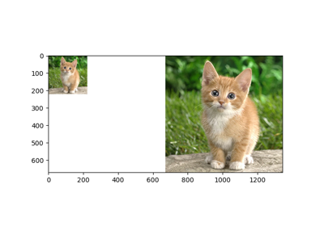
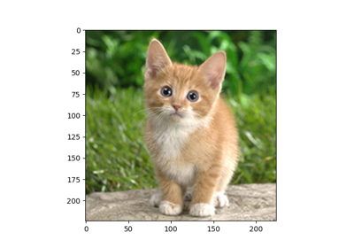
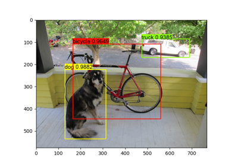

Compile Deep Learning Models
TVM includes a variety of front-ends that can import models in different formats. These how-tos demostrate how to import models using the Python API.



Compile ONNX Models


Compile TFLite Models


Compile YOLO-V2 and YOLO-V3 in DarkNet Models
Compile YOLO-V2 and YOLO-V3 in DarkNet Models